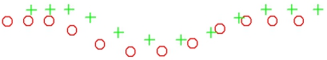
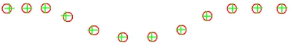
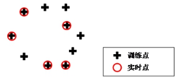
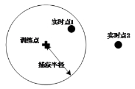

点匹配工具是进行二维点集的定位或匹配。通过在实时点集中寻找与训练点集具有相似模式的一个或多个结果，匹配结果包括变换后的训练点集、训练点集和实时点集之间的匹配关系。其应用效果如图1所示。


| 分类 | 参数名称 | 参数描述 |
|---|---|---|
| 属性窗口 | 是否自动设置网格化尺寸 | 控制网格化尺寸自动设置或手动设置。 |
| 网格化尺寸 | 指实际点集变换到网格化点集的尺寸。 | |
| 是否自动设置旋转步长 | 控制旋转步长自动设置或手动设置。 | |
| 旋转步长 | 进行点匹配过程中在旋转维度搜索时遍历过程的步长，单位为度。 | |
| 是否自动设置缩放步长 | 控制缩放步长自动设置或手动设置。 | |
| 缩放步长 | 进行点匹配过程中在缩放维度搜索时遍历过程的步长，单位为1。 | |
| 结果个数 | 训练点与实时点中匹配存在几种模式，默认为1。 | |
| 最小覆盖率 | 对得到结果覆盖率最小值的限定。 |
|
| 是否自动设置捕获半径 | 控制捕获半径自动设置或手动设置。 | |
| 捕获半径 | 训练点与实时点匹配时两点相距的最大距离。 |
|
| 是否开启缩放 | 控制是否开启缩放搜索范围。 | |
| 缩放搜索范围 | 点匹配工具可以进行缩放维度的搜索。 | |
| 旋转搜索范围 | 点匹配工具可以进行旋转维度的搜索，需输入搜索范围，比如-180°~180°。 | |
| 是否X方向全范围搜索 | X方向，训练点集需要平移搜索的范围，可选择是否进行全范围搜索。若为全范围搜索，算法会根据变换训练点集和实时点集进行计算。若为手动设置，其设置值为与实时点集质心位置的相对值。 | |
| X方向搜索范围 | 输入X方向，训练点集需要平移搜索的范围。 | |
| 是否Y方向全范围搜索 | Y方向，训练点集需要平移搜索的范围，可选择是否进行全范围搜索。若为全范围搜索，算法会根据变换训练点集和实时点集进行计算。若为手动设置，其设置值为与实时点集质心位置的相对值。 | |
| Y方向搜索范围 | 输入Y方向，训练点集需要平移搜索的范围。 | |
| 结果索引 | 输入结果的索引号。 | |
| 图像窗口 | 训练点集显示位置 | 显示训练点集。 |
| 实时点集显示位置 | 显示实时点集。 | |
| 背景图像 | 显示背景图像。 | |
| 数据链 | 训练点集 | |
| 实时点集 | 输入实时点集。 | |
| 高级界面 | 自动设置网格化尺寸 | 控制网格化尺寸自动设置或手动设置，同属性窗口的是否自动设置网格化尺寸参数。 |
| 网格化尺寸 | 指实际点集变换到网格化点集的尺寸，同属性窗口的网格化尺寸参数。 | |
| 自动设置旋转步长 | 控制旋转步长自动设置或手动设置，同属性窗口的是否自动设置旋转步长参数。 | |
| 旋转步长 | 进行点匹配过程中在旋转维度搜索时遍历过程的步长，单位为度，同属性窗口的旋转步长参数。 | |
| 自动设置缩放步长 | 控制缩放步长自动设置或手动设置，同属性窗口的是否自动设置缩放步长参数。 | |
| 缩放步长 | 进行点匹配过程中在缩放维度搜索时遍历过程的步长，单位为1同属性窗口是否自动设置缩放步长参数。 | |
| 运行参数 | 结果个数 | |
| 最小覆盖率 | 对得到结果覆盖率最小值的限定，同属性窗口的最小覆盖率参数。 | |
| 自动设置捕获半径 | 控制捕获半径自动设置或手动设置，同属性窗口的是否自动设置捕获半径参数。 | |
| 捕获半径 | 训练点与实时点匹配时两点相距的最大距离，同属性窗口的捕获半径参数。 | |
| 缩放开启 | 控制是否开启缩放搜索范围，同属性窗口的是否开启缩放参数。 | |
| 缩放范围 | 点匹配工具可以进行缩放维度的搜索，同属性窗口的捕获半径参数。 | |
| 旋转范围 | 点匹配工具点匹配工具可以进行旋转维度的搜索，需输入搜索范围如-15°~15°，同属性窗口的旋转搜索范围参数。 | |
| X方向全范围搜索 | X方向，训练点集需要平移搜索的范围，可选择是否进行全范围搜索，同属性窗口的是否X方向全范围搜索参数。 | |
| X方向移动范围 | 输入X方向，训练点集需要平移搜索的范围，同属性窗口的Y方向搜索范围参数。 | |
| Y方向全范围搜索 | Y方向，训练点集需要平移搜索的范围，可选择是否进行全范围搜索，同属性窗口的是否Y方向全范围搜索参数。 | |
| Y方向移动范围 | 输入Y方向，训练点集需要平移搜索的范围，同属性窗口的Y方向搜索范围参数。 |
| 分类 | 参数名称 | 参数描述 |
|---|---|---|
| 监视窗口 | 训练点集 | 输出训练点集坐标。 |
| 实时点集 | 输出实时点集坐标。 | |
| 结果个数 | 训练点与实时点中匹配存在几种模式，默认为1。 | |
| 变换后训练点集 | 输出变换后训练点集的坐标。 | |
| 点匹配结果 | 输出点匹配关系，如果实时点集存在训练点集的捕获半径范围内则两个点集为匹配点，匹配关系是点集中所有匹配点的集合。若训练点存在匹配点则会给出匹配实时点的序号。 | |
| 执行结果 | 工具执行结果。 | |
| 执行时间 | 工具执行时间。 | |
| 图像窗口 | 结果背景图像 | 显示背景图像。 |
| 变换后训练点集显示位置 | 显示变换后训练点集。 | |
| 变换后实时点集显示位置 | 显示变换后实时点集。 | |
| 执行结果 | 显示工具执行结果，执行成功显示“OK”，执行失败显示“NG”，同监视窗口的执行结果参数。 | |
| 数据链 | 训练点集 | 输出训练点集，供后序工具使用，同监视窗口的训练点集参数。 |
| 实时点集 | 输出实时点集，供后序工具使用，同监视窗口的实时点集参数。 | |
| 点匹配结果 | 输出点匹配关系，供后序工具使用，同监视窗口的点匹配结果参数。 | |
| 点匹配距离结果 | 匹配点距离结果数组。 | |
| 二维线性变换平移量 | 输出目标相对于模板的平移变换，供后序工具使用。 | |
| 二维线性变换旋转角度 | 输出目标相对于模板的旋转变换，供后序工具使用。 |
覆盖率是指存在匹配点的训练点个数与训练点总数的比值。如图2所示，其覆盖率为50%。

捕获半径是指训练点与实时点匹配时两点相距的最大距离。如图3所示，实时点1在捕获半径内而实时点2在捕获半径外，因此实时点1为训练点的匹配点。

高级属性界面，运行结果属性页中，包含匹配点对应关系、覆盖率、缩放、旋转、X平移、Y平移和RMS。其中RMS是衡量存在匹配点的实时点集和训练点集之间的差异的变量。P1为经过二维线性变换后的训练点集中存在匹配点的点，P2为实时点集中存在匹配点的点，P1和P2互为匹配点，n为训练点集存在匹配点的个数，disP1,P2)为匹配点之间的距离。RMS计算方式如下：
(1)
建议可以自动设置的参数由程序自动设置，其中运行参数中部分默认参数为：结果个数1，最小覆盖率0.7，旋转范围-15~15度，缩放范围不开启。
如果自动设置参数下不能找到匹配结果，需要先确认如上参数设置合理。
如果仍不能找到匹配结果可以尝试手动设置训练参数。
若在自动设置参数下算法过慢，可以按照如下几条进行调整以达到较高效率：
检查最小覆盖率设置是否过小。
通过减小旋转范围和缩放范围，进而减小搜索用时。
手动设置x方向移动范围和y方向移动范围从而缩小平移方向搜索用时，此方法对存在较多丢失点和额外点以及存在多个结果以至影响实时点质心位置的点集不建议使用。
尝试改变旋转步长、缩放步长、网格化尺寸等，减小搜索时间，需要进行试验确定是否会对结果产生影响。
参见“\Samples\点匹配工具.gvp”。